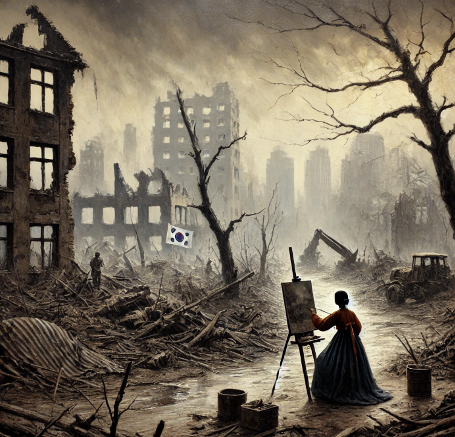

작가
박완서
출판일
1970년
감상평에 대한 AI그림
나목은 전쟁의 상처와 인간의 내면을 섬세하게 그려낸 작품이다. 주인공이 황폐한 시대 속에서 예술과 사랑을 통해 희망을 찾으려는 과정이 깊은 울림을 준다. 나목은 상처받은 시대를 살아가는 인간의 고뇌와 희망을 성찰하게 하는 작품으로, 박완서 문학의 깊이를 느낄 수 있는 소설이다. 전쟁의 상처를 안고도 꿋꿋하게 삶을 영위해나가려는 모습을 그린 것이 아주 인상적이었다.

감상평에 대한 AI평가
전반적으로 감상평이 잘 정리되어 있으며, 작품의 주제와 감동을 효과적으로 전달하고 있습니다. 그러나 더 구체적인 예시나 작품 속 인물의 심리 변화에 대한 언급이 추가되면 더욱 풍부한 감상평이 될 수 있습니다. 몇 가지 보완할 점을 제안하자면:
구체적인 예시 추가
예술과 사랑을 통해 희망을 찾으려는 과정이 어떤 장면에서 두드러지는지 한두 가지 예를 들면 더 설득력 있을 것입니다.
문장 다듬기
"전쟁의 상처를 안고도 꿋꿋하게 삶을 영위해나가려는 모습" → "전쟁의 상처를 안고도 삶을 이어가려는 주인공의 강인한 모습"처럼 더 자연스럽게 다듬을 수 있습니다.